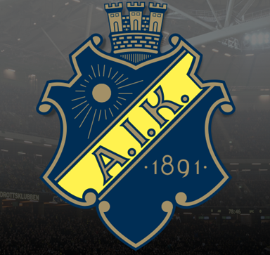

Fotbolls skämt
AIK skämt
Posten hade gjort en frimärkssamling med AIK. Det var frimärken med alla olika spelare. Men det slutade med att de drog tillbaka dem. Folk var nämligen osäkra på vilken sida de skulle spotta.
HIF skämt
Vad är skillnaden på ett batteri och Bajen? – Ett batteri har också en positiv sida.

Bk Häcken skämt
Vad gör man när Häcken vinner allsvenskan? – Stänger av playstationet och går tillbaka till det riktiga livet..